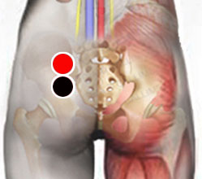

Staquibotrix
Par
glúteo - supranalga *

Nota: En el mismo lado izquierdo o derecho. También puede responder como supranalga - supranalga
Generalidades:
Staquibotrix o Stachybotrys es un género de hongo del cual existen aproximadamente 50 especies. Como la mayoría de los hongos prolifera en lugares húmedos y polvosos, como edificios abandonados. Las esporas del hongo pueden ser inhaladas y causar infección. Resulta patógeno en virtud de la micotoxina que afecta al ser humano causando trastornos de leves a graves dependiendo del grado de exposición a las esporas y el estado del paciente.
Síntomas:
Síntomas alérgicos: pueden ser leves como fatiga crónica, dolor de cabeza, irritación de ojos y mucosas de vías respiratorias, tos, síntomas respiratorios. En casos severos las reacciones como vómito, nausea, sangrado de pulmones y nariz pueden ser peligrosas. En 1990 dos muertes de menores en Cleveland, Ohio se sospecha que pudieron haber sido consecuencia de este hongo.